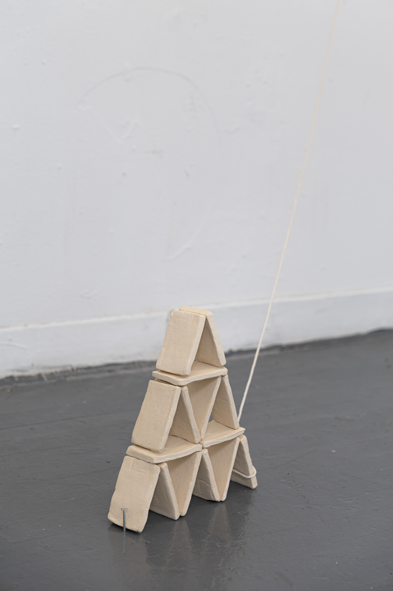
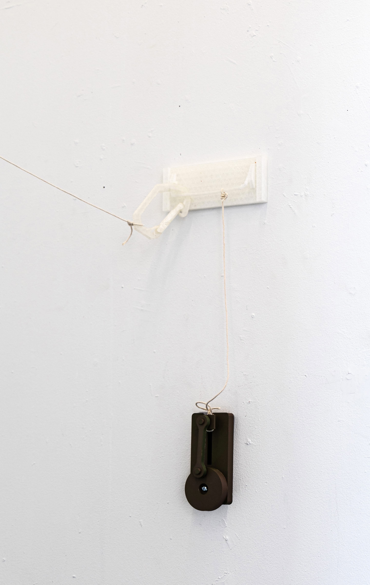
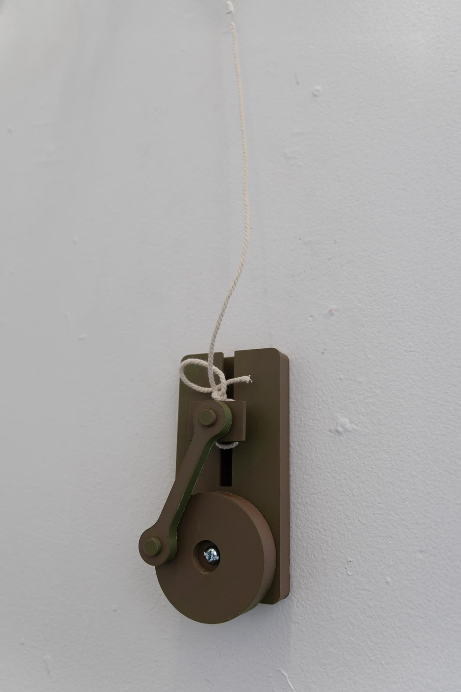
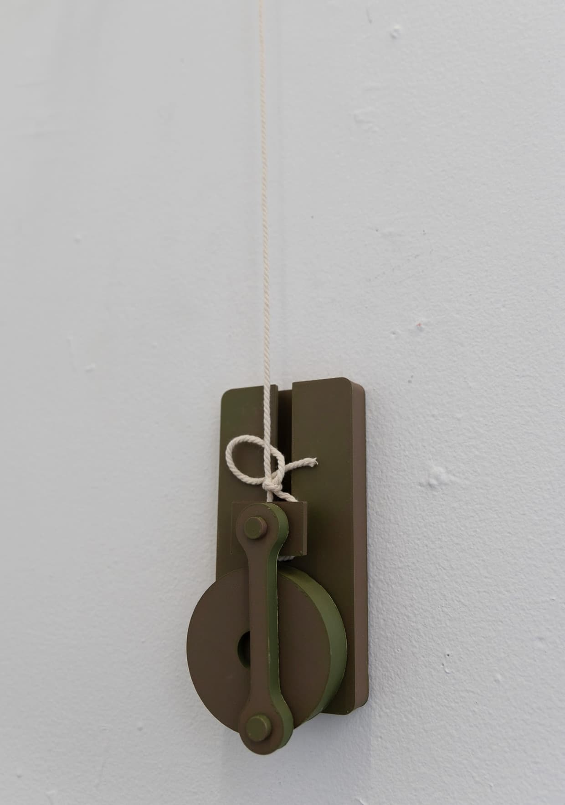
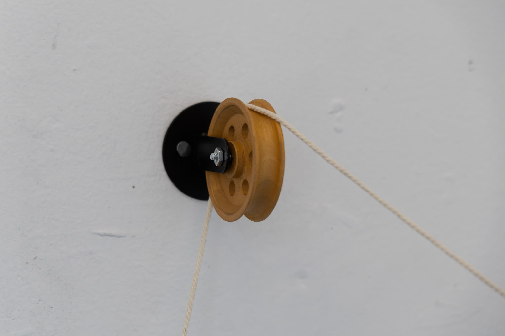
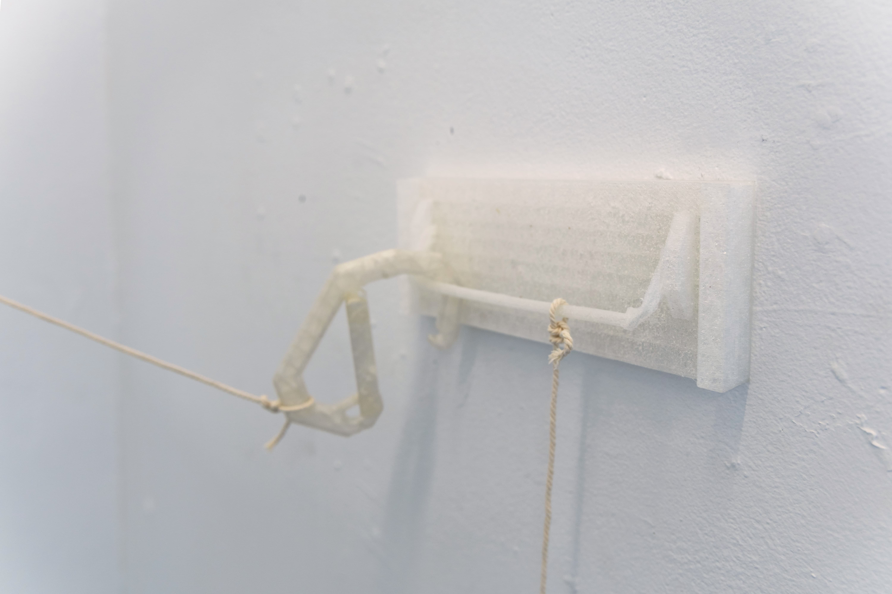
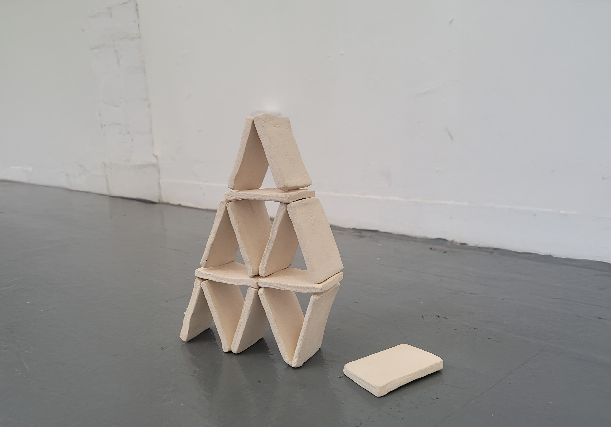

This sculptural installation is composed as a seemingly functional system: a ceramic house of cards tethered to a rope that travels through a wall-mounted pulley, connects to a 3D-printed push bar via carabiner, and links to a crank mechanism. The entire setup suggests fragile balance. It looks as though any movement might bring about collapse.
And yet — nothing happens.
The pulley doesn’t pull. The push bar, flexible and printed with TPU, doesn’t shift anything at all. The carabiner is movable but holds no tension. Though the crank can be interacted with, it produces no effect. The rope is connected, but the system is functionally hollow.
On the ground sits the house of cards, made not of paper but of matte ceramic — heavier, more rigid, more fragile. Its visual language suggests collapse is imminent, yet paradoxically, it stands steady.
This piece explores the illusion of tension and the failure of systems we trust to act. It reflects on mechanisms—emotional, social, institutional—that appear purposeful but yield no real result. It asks: what are we participating in? What effort do we invest in appearances that go nowhere? And what happens when fragility is not what breaks, but what endures?






